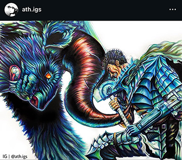
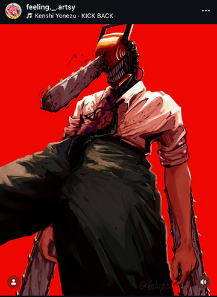
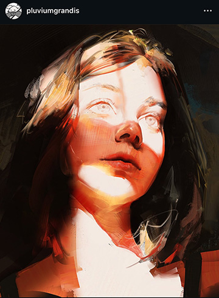

My name is Lucas Ramos
My first inspiration is:
ath.igs

The decision of what colors to use (especially since it is
all done with traditional tools) is insane especially when
paired with her amazing way that she creates texture.
My second inspiration is:
feeling._.artsy

Her anatomy is so realistic with a bit of her own art style
and use of color that I have not seen from other artists.
She has fantastic skin rendering with a great knowledge of anatomy.
My third inspiration is:
pluviumgrandis

This artist focuses a lot on very clear shapes and rendering without
lineart that creates these amazing paintings with so much life and expression.
They are a masterclass with using digital brushes with a wide range of styles that
they illustrate.